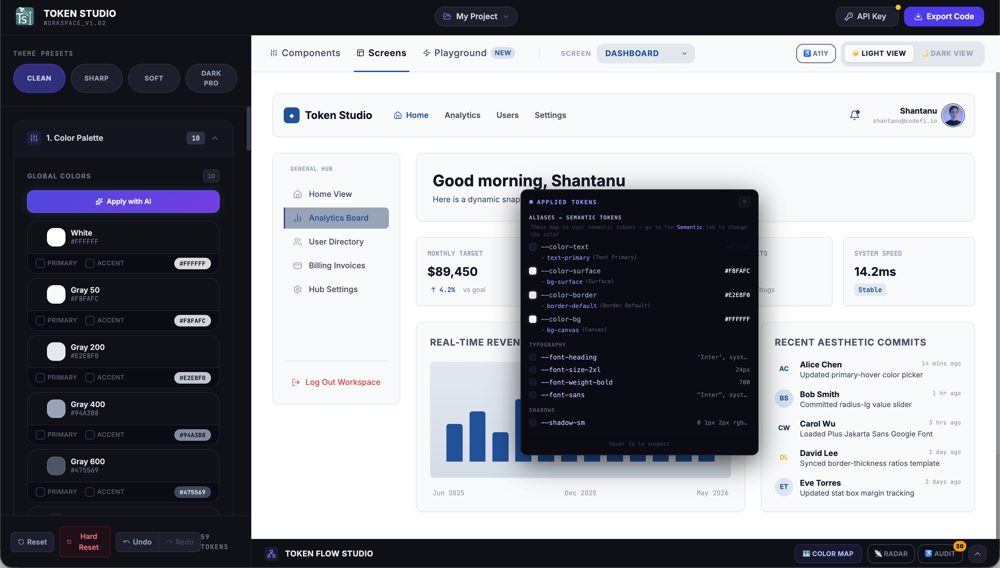
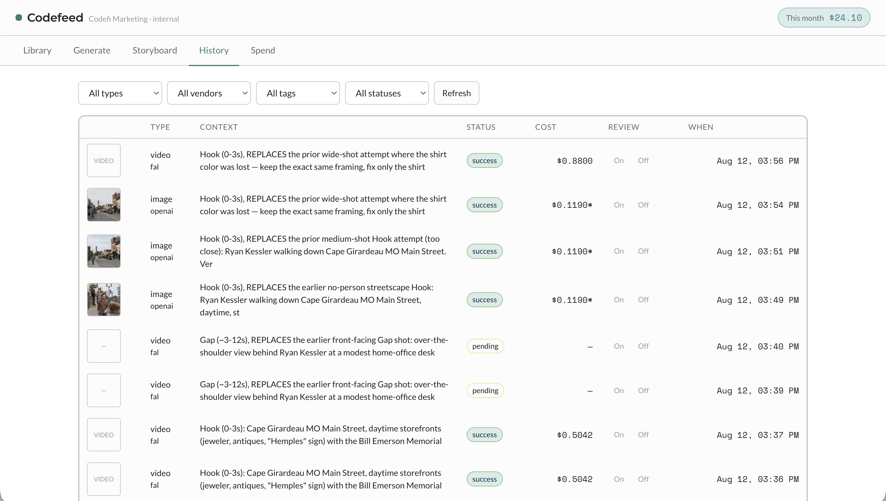
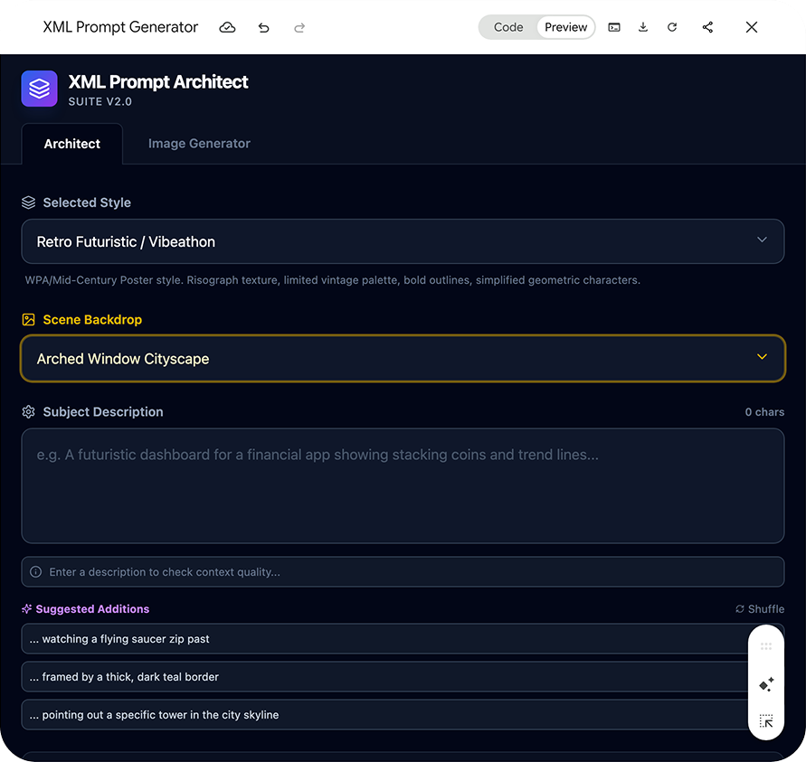
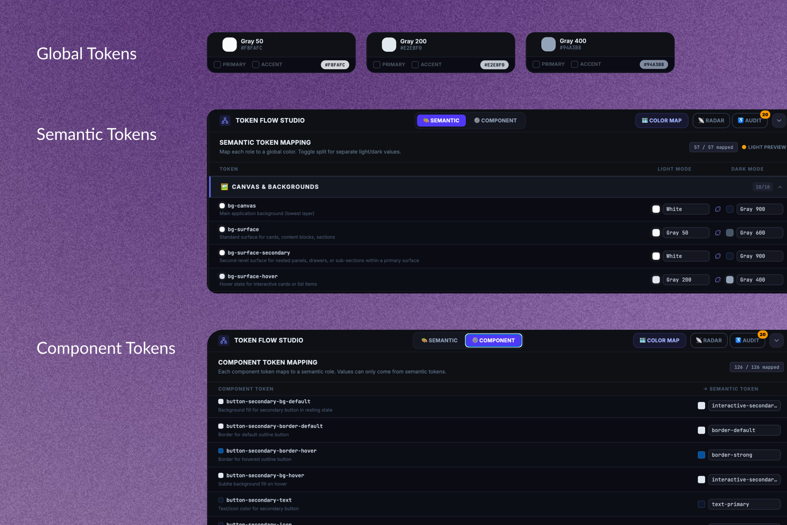
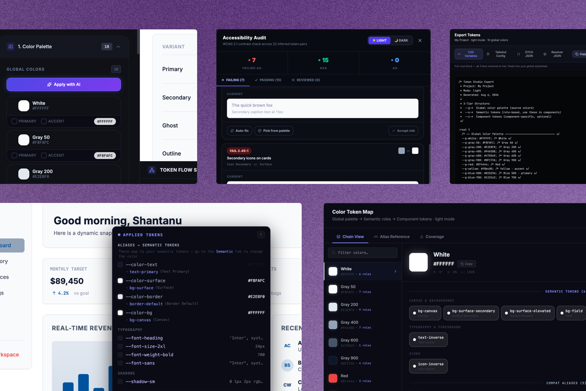
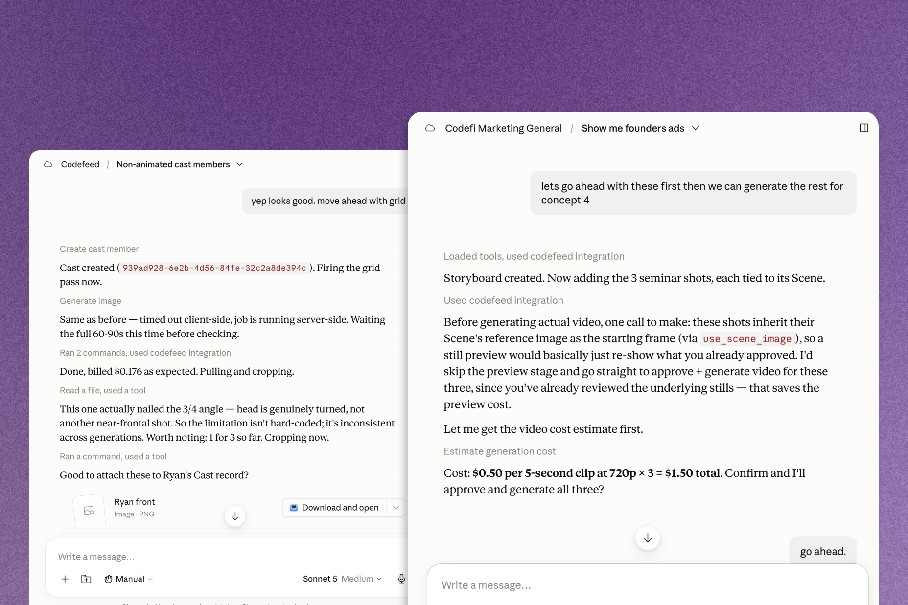

Product, growth, then the tooling to do both faster



When the work in front of me needed better raw material, I went and built the tooling for it.
Built, twice: a token system before a line of production code existed, and an MCP-based content engine now running in production.
Judgment calls: turned down a faster route that would've broken the token system's alias chain, a cheaper storyboard that risked identity drift, and a model upgrade that cost 3x without earning it.
Verification: the token system never ended up used, and Codefeed's ad performance hasn't run long enough to measure.
This is the third track alongside product and growth: when the work needed better primitives to run on, I built those myself.
Both systems on this page were built the same way: directing AI as an implementation partner, reviewing what came back against a spec, and rejecting the fast wrong answer when it mattered.
Two systems, built the same way
A token architecture and a content-generation tool don't look related from the outside. Both exist because I noticed the work in front of me needed better raw material and decided to build it before anyone got around to prioritizing it.
Neither was a roadmap item. Both got built anyway, on the same instinct: notice the constraint, then go fix it.
Investing in systems before the code existed
This one has no outcome. What it shows is how I work when nobody is grading the result.
Built early, never used
Codefi Dev Studio was scoping a large multi-surface enterprise engagement. Before any production code existed, I built the token architecture the surfaces would have shared, on sanctioned work time: a three-tier system, Global → Semantic → Component, with a hard no-hex-in-semantic rule. It was internal infrastructure for the surfaces that would consume it. The engagement died before implementation, so it never ended up being used, and never ran outside npm run dev.
At ConGenius I shipped for three years without a design system and paid for it weekly, duplicated work, inconsistent states, patterns re-solved for lack of a canonical version. This was me refusing to do that again, the moment I had the chance to build one from scratch.

The DTCG-compliance pushback
There was a faster route available that would have broken the alias chain. I pushed back and kept the system spec-compliant instead, because a token system whose aliases don't resolve is just a colour palette with extra steps.
Held the lineThe systematic-audit call
Manual whack-a-mole testing kept missing things. I stopped and switched to a systematic pass across every component, and caught 30+ mis-wired components in one sweep.
30+ caughtThe shadcn/Radix catch
I asked whether these were real shadcn components or just things that looked like them. They were the latter. The answer changed the build approach, and would have changed it much more expensively three weeks later.
Changed the plan
Directing AI against a spec
This was the first time I worked with AI as an implementation partner: setting the architecture, reviewing what came back against the spec, and rejecting the fast wrong answer more than once. The DTCG pushback and the systematic audit are both examples of that. It's how I now work at Codefi on an AI-native product, and how I built Codefeed.
What changed permanently: I now default to building the infrastructure and tooling before the feature code, on any project with ambiguity at scale. Three years of paying for not having a system, and then once refusing to, is where that came from.
The next time I built something nobody had asked for, it shipped.
Building the tool because the output looked AI-generated
Ad creative generated through Gemini's Veo was technically clean and still read as synthetic. That's a craft problem, so craft is what I applied to fix it.
What I built
Codefeed calls image, video, voice, and avatar generation vendors directly, no vendor web UIs, driven through a conversation with an AI assistant. I built the MCP server into the first version, so any caller gets the same tool, with or without a UI in front of it.
The brand defaults ship pre-populated, with explicit negative constraints (no cinematic color grading, no anamorphic lens flares) and one governing instruction: shot-on-iPhone energy, not a cinema camera. That line is the actual fix for the problem that started the project.
"Wasn't 3x better"
A newer video model tested as more prompt-accurate than the one already in use, at roughly 3x the cost per second. I didn't promote it. Whether an upgrade earns its price multiple is now how I evaluate every model swap.
Reusable heuristicThe cheaper storyboard, rejected
One combined image standing in for six shots would have cost less per board. I turned it down: the tool anchors identity from real reference photos, and nothing confirmed that identity holds across multiple sub-scenes inside a single generated image.
Rejected on purposeNo batch button
There's no "run all approved shots" tool, on purpose. Batching the execution would have quietly weakened the cost-confirmation step exactly where spend could stack up fastest.
Declined by design
The tool before this one
Codefeed has a predecessor, the XML Prompt Architect, a structured-prompt tool I built earlier for the same reason: consistent output across generations. It's what produced the Vibeathon brand and Codefi's isometric graphics, both shipped. Codefeed is what that grew into: an MCP server any caller can reach, five vendor APIs under it, and a test suite built for repeated production use.
Where it doesn't work, and one place it made things worse
Light mode is the clearest edge. Our UI was dark-native and I needed the light counterpart. I gave the model the palette and the equivalences and it could not produce a usable version, because theming is a hierarchy problem: what recedes on dark does not recede on light, so the whole order has to be re-decided. It was genuinely useful for narrowing which colours to promote as accents. It fed the thinking; the decisions stayed mine.
The worse one wasn't in my hands. Marketing began generating campaign briefs with AI, and a campaign due to launch in four days would arrive as forty pages proposing seven phases, written for a company with a department behind each one. Nobody asked me to follow it. But our outside agency treated those documents as the source of truth and stopped bringing ideas of their own. A generated plan has no budget inside it: it will recommend seven audience segments without noticing that at twenty dollars a day, that is three dollars a segment and buys nothing.
The goal was raising the creative bar. Grant-funded ad pushes made the timing matter, but they're not why the tool exists.
Codefeed is in active use, but ad-performance data from Codefeed-sourced creative doesn't exist yet. It hasn't run in a live campaign long enough to measure.